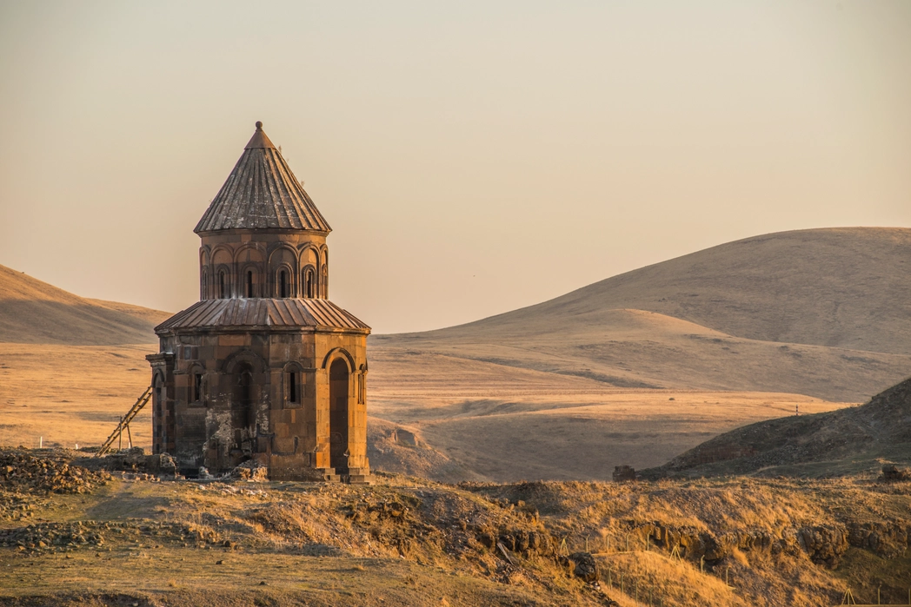
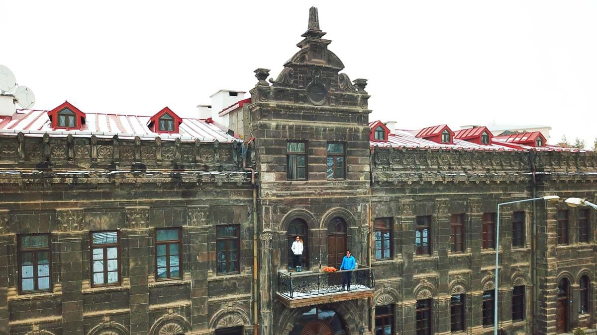
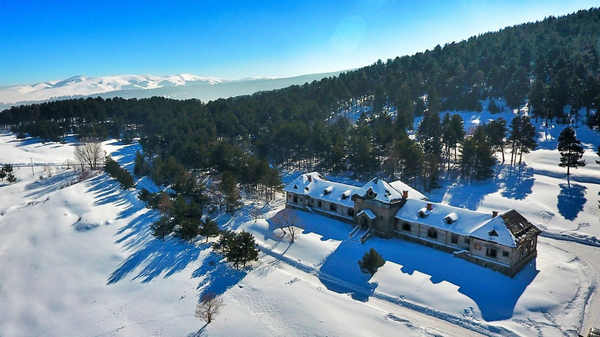
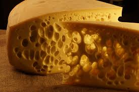
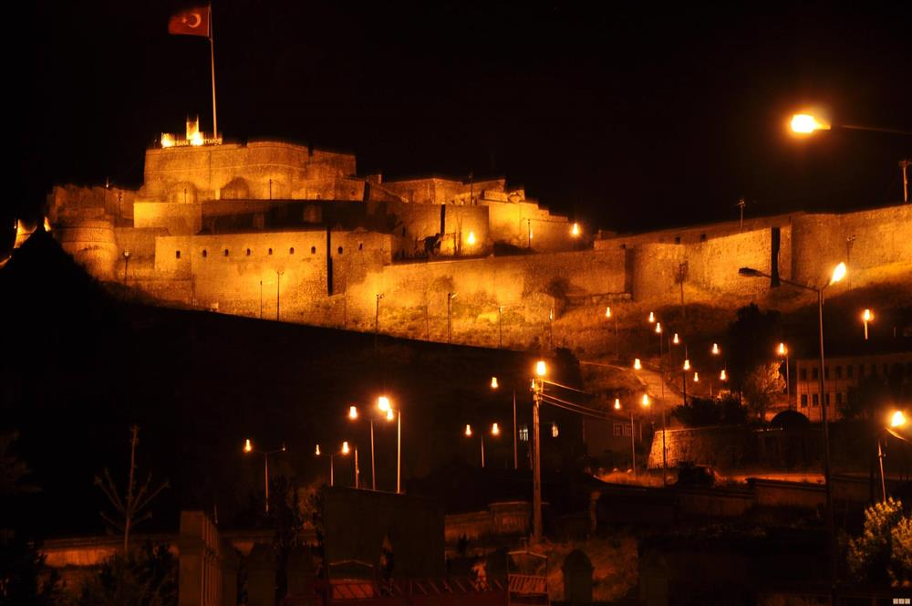

Tarih ve kültürün buluştuğu Anadolu'nun doğusundaki eşsiz şehir.
UNESCO Dünya Mirası Listesi’nde yer alan Ani Harabeleri, Kars'ın simgesi haline gelmiş tarihi bir bölgedir. 1000 yıl öncesine dayanan bu kalıntılar, Ermeni, Gürcü ve Selçuklu mimarisinin izlerini taşır.
Kars şehir merkezi, Baltık mimarisiyle inşa edilmiş taş binalarıyla dikkat çeker. Bu yapılar, Rus işgali döneminden kalmadır ve Türkiye’de başka örneği olmayan bir mimari tarza sahiptir.
Kars, sadece tarihiyle değil; Sarıkamış Kayak Merkezi gibi doğal güzellikleriyle de öne çıkar. Kristal kar yapısı sayesinde kayak turizmi açısından çok önemli bir noktadır.
Kars, gravyer ve kaşar peyniri üretimi ile meşhurdur. Yüzyıllardır süregelen bu peynir kültürü, Kars’ı gastronomik anlamda da özel bir şehir haline getirmiştir.
Kars Kalesi, 12. yüzyılda Saltuklu Hükümdarı Melik İzzeddin tarafından yaptırılmıştır. Kale, şehrin yüksek bir noktasında yer alır ve Kars manzarasına hâkimdir. Tarihi boyunca birçok kez onarılmış ve savunma amacıyla kullanılmıştır. Günümüzde Kars'ın en önemli simgelerinden biri olarak ziyaretçilerini ağırlamaktadır.
